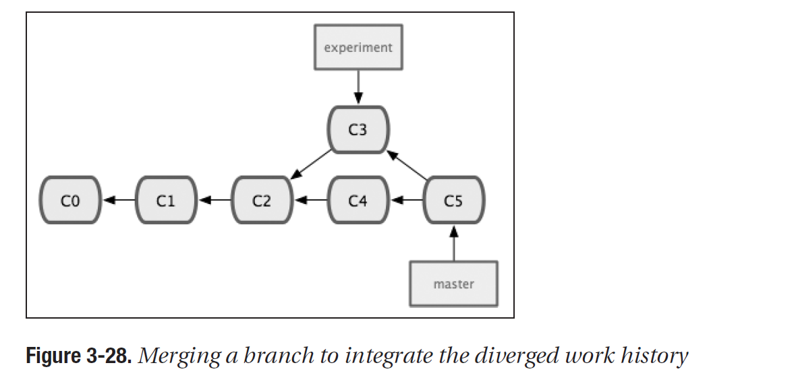

GIT workshop
for SVN users
Main differences
Alt + click
Nearly Every Operation Is Local - very fast
Git Has Integrity (checksum)
Git Generally Only Adds Data
The Three States
Recording Changes to the Repository
Working with origin
Pull without rebase
Pull with rebase
Pull with rebase - result
Cherry-pick
Cherry-pick result
Stash
Workflows
Workflows
Workflows
A successful git branching model